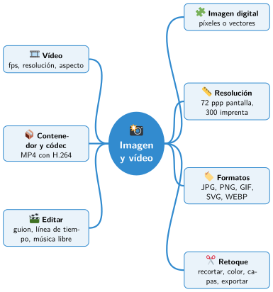

Bloque IV · Multimedia, comunicación y seguridad
UD07 Imagen y vídeo
RA6Integra imágenes digitales y secuencias de vídeo utilizando aplicaciones tipo y periféricos en documentos de la empresa.
Sesiones
- Sesión 7.1 La imagen digital: formatos y resolución
- Sesión 7.2 Obtener y retocar imágenes
- Sesión 7.3 El vídeo digital: elementos, formatos y códecs
- Sesión 7.4 Grabar y editar vídeo
Al terminar la unidad
Mapa mental de la unidad

✏️ Repasa la unidad con el mapa: tapa una rama y explica en voz alta lo que pone.